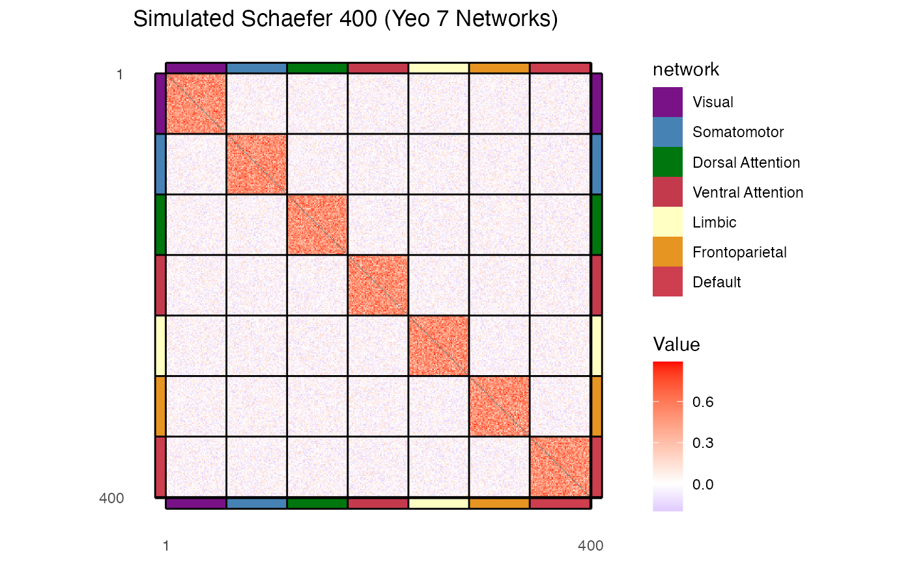

Plot an affine/adjacency matrix (e.g., correlation matrix) with a BIDS-format lookup table, grouping bands, and grid lines.
Usage
plot_heatmap(
affine_matrix,
lut,
group_var = "network",
border_width = 10,
scale_fill_type = c("gradient2", "viridis", "distiller"),
scale_fill_limits = NULL,
scale_fill_low = "blue",
scale_fill_mid = "white",
scale_fill_high = "red",
scale_fill_midpoint = 0,
scale_fill_palette = NULL,
na_val = NULL,
scale_fill_na_color = "grey50",
diagonal_to_na = FALSE,
title = NULL,
subtitle = NULL,
x_label = NULL,
y_label = NULL,
x_breaks = NULL,
y_breaks = NULL,
out_path = NULL,
width = 7,
height = 6,
units = "in",
dpi = 300,
match_by_name = TRUE,
grid_color = "black",
grid_linewidth = 0.5,
legend_title = "Value",
group_legend_title = group_var
)Arguments
- affine_matrix
A square matrix, data.frame, or a path to a CSV/TSV file containing the matrix. Can be with or without row and column names.
- lut
A data.frame or a path to a BIDS-format TSV file containing the lookup table. Must contain 'index', 'name', and 'color' (hex values) columns, and the grouping variable column.
- group_var
Character. Name of the column in
lutto use as the grouping variable. Default is"network".- border_width
Integer. Width (in plot units/pixels) of the grouping bands around the plot. Set to
0to omit. Default is10.- scale_fill_type
Character. Type of color scale to use:
"gradient2"(diverging),"viridis", or"distiller". Default is"gradient2".- scale_fill_limits
Numeric vector of length 2. Minimum and maximum values for the colorscale. Default is
NULL(auto-calculated).- scale_fill_low
Character. Color for low values in a
"gradient2"scale. Default is"blue".- scale_fill_mid
Character. Color for middle values in a
"gradient2"scale. Default is"white".- scale_fill_high
Character. Color for high values in a
"gradient2"scale. Default is"red".- scale_fill_midpoint
Numeric. Midpoint for a
"gradient2"scale. Default is0.- scale_fill_palette
Character. Name of the palette/option to use for
"viridis"or"distiller"scale. Default isNULL.- na_val
Numeric. Value(s) in the matrix to replace with
NA. Default isNULL.- scale_fill_na_color
Character. Color to use for
NAvalues in the matrix. Default is"grey50".- diagonal_to_na
Logical. If
TRUE, sets the diagonal elements of the matrix toNA. Default isFALSE.- title
Character. Title of the plot. Default is
NULL.- subtitle
Character. Subtitle of the plot. Default is
NULL.- x_label
Character. Label for the x-axis. Default is
NULL.- y_label
Character. Label for the y-axis. Default is
NULL.- x_breaks
Numeric vector. Breaks for the x-axis. Default is
NULL(defaults toc(1, N)).- y_breaks
Numeric vector. Breaks for the y-axis. Default is
NULL(defaults toc(1, N)).- out_path
Character. Optional path to save the generated plot. If
NULL, the plot is not saved.- width
Numeric. Width of the output image in
units. Default is7.- height
Numeric. Height of the output image in
units. Default is6.- units
Character. Units for output image size (
"in","cm","mm", or"px"). Default is"in".- dpi
Numeric. Resolution of the output image in dots per inch. Default is
300.- match_by_name
Logical. If
TRUE, attempts to align and reorder matrix rows/columns to match the lookup table using colnames/rownames matching. Default isTRUE.- grid_color
Character. Color of the grid lines. Default is
"black".- grid_linewidth
Numeric. Width of the grid lines. Default is
0.5.- legend_title
Character. Title of the heatmap color legend. Default is
"Value".- group_legend_title
Character. Title of the grouping band legend. Default matches
group_var.
Examples
# Simulate a 400-node lookup table matching Schaefer 400 with Yeo 7 networks
networks <- c("Visual", "Somatomotor", "Dorsal Attention", "Ventral Attention",
"Limbic", "Frontoparietal", "Default")
net_colors <- c("#781286", "#4682B4", "#00760E", "#C43A4D",
"#FFFFC4", "#E69422", "#CD3E4E")
net_rep <- rep(networks, each = 57, length.out = 400)
color_rep <- rep(net_colors, each = 57, length.out = 400)
sim_lut <- data.frame(
index = 1:400,
name = paste0("parcel", 1:400),
color = color_rep,
network = net_rep,
stringsAsFactors = FALSE
)
# Simulate a 400x400 symmetric correlation matrix with network block structures
set.seed(42)
sim_matrix <- matrix(runif(400 * 400, min = -0.2, max = 0.2), nrow = 400, ncol = 400)
sim_matrix <- (sim_matrix + t(sim_matrix)) / 2
for (net in networks) {
idx <- which(sim_lut$network == net)
sim_matrix[idx, idx] <- sim_matrix[idx, idx] + runif(length(idx)^2, min = 0.3, max = 0.7)
}
diag(sim_matrix) <- 1.0
rownames(sim_matrix) <- sim_lut$name
colnames(sim_matrix) <- sim_lut$name
# Plot the heatmap
p <- plot_heatmap(
affine_matrix = sim_matrix,
lut = sim_lut,
group_var = "network",
border_width = 10,
diagonal_to_na = TRUE,
title = "Simulated Schaefer 400 (Yeo 7 Networks)"
)
print(p)
